Aula 5 - Amostragem#
Versão 2023
Essas notas de aula podem ser compartilhadas nos termos da lincença Creative Commons CC BY-NC-ND 4.0, com propósitos exclusivamente educacionais.
Attribution-NonCommercial-NoDerivatives 4.0 International
Introdução
A teoria da Amostragem é a base matemática para se obter um sinal \(x(n)\) discreto no tempo a partir de um sinal \(x(t)\) contínuo no tempo.
A obtenção de uma sequência de amostras \(x(n)\) a partir de um sinal \(x(t)\) contínuo no tempo pode ser representada pela seguinte relação:
Em que:
\(n\) um número inteiro,
\(T_a\) é o período de amostragem do sinal,
\(F_a = 1/T_a\) é a freqüência de amostragem
Na prática a operação de amostragem é executada por um conversor AD (analógico-digital) que inclui também a quantização das amplitudes das amostras.
O Problema da Amostragem
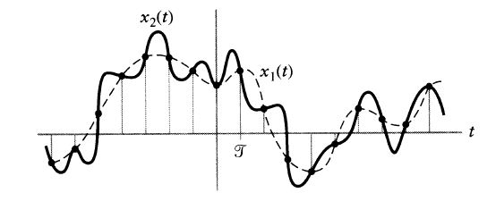
Observa-se que para um conjunto de amostras \(x[n]\), existem inúmeras funções \(x_i(t)\) que passa por esses pontos, \(x_1(nT) = x_2(nT)\)
Sempre é possível amostrar funções que atendam as condições de Dirichlet, \(x(t) \to x(nT) \to x[n]\)
Porém, a garantia de se reconstruir \(x(t)\) a partir de suas amostras, é necessária restrições adicionais sobre o sinal contínuo \(x(t)\)
As condições de Dirichlet são:
O sinal deve ser absolutamente integrável, \(\sum_{-\infty}^{\infty} |x(t)|dt < \infty\)
Em um intervalo qualquer sinal, não deve existir infinitos pontos de máximo e mínimo
Em um intervalo finito qualquer do sinal, não devem existir infinitas descontinuidades
Representação Matemática
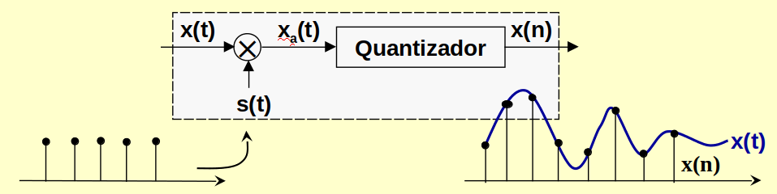
O sinal \(s(t)\) é um trem de impulsos periódicos tal que: \begin{equation} s(t) = \sum_{n=-\infty}^{\infty}\delta(t-nT_a) \tag{2}\end{equation}
Como o sinal amostrado é o produto de \(s(t)\) por \(x(t)\), então: \begin{equation} x_a(t) = x(nT_a) = x(t)s(t) = \sum_{n=-\infty}^{\infty}x(t)\delta(t-nT_a) \tag{3} \end{equation}
Calculando a transformada de Fourier tem-se:
\(X_a(\Omega)\) consiste de cópias regularmente espaçadas de \(X(\Omega)\)
O espaçamento é dado por múltiplos inteiros de \(\Omega_a\).
Estas cópias são superpostas como mostra a figura abaixo:
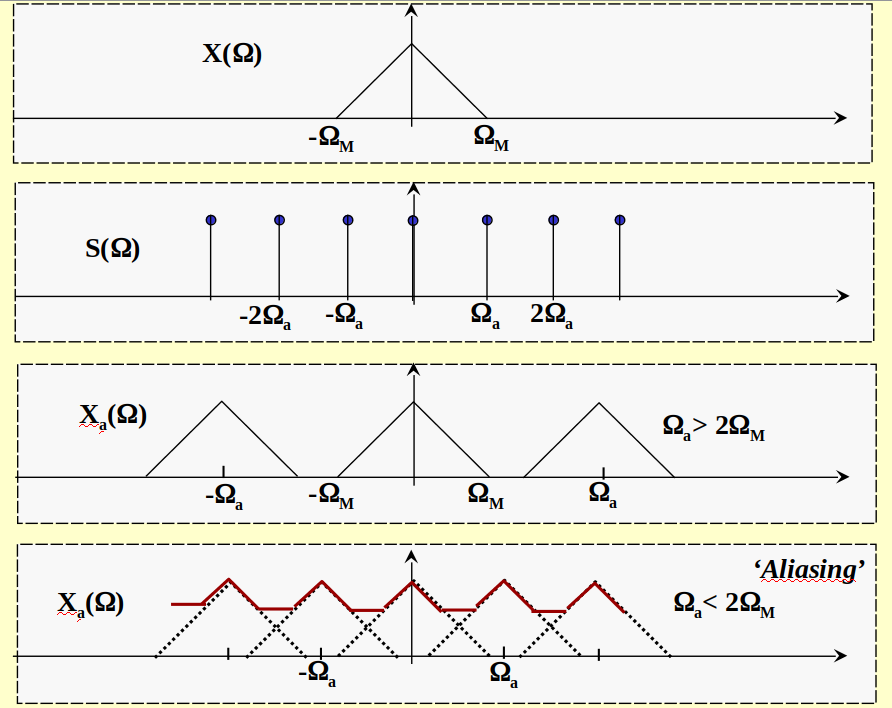
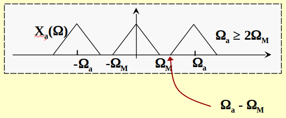
Observe que para não haver superposição de Espectros:
Se a condição acima é satisfeita as réplicas de \(X(\Omega)\) não irão se superporem.
Em cada período tem-se uma réplica exata de \(X(\Omega)\).
Portanto o sinal \(x(t)\) pode ser recuperado a partir de \(x_a(t)\) através de um filtro passa-baixas com corte em \(\Omega_c = \Omega_M\)
Recuperação de x(t)
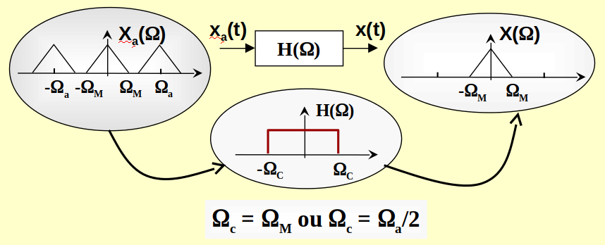
Se a condição \(\Omega_a > 2\Omega_M\) não é satisfeita, as réplicas de \(X(\Omega)\) se sobrepõem, modificando o espectro do sinal original.
O sinal na banda básica aparecerá distorcido e não poderá ser recuperado. Este efeito é conhecido como ‘aliasing’.
Teorema da Amostragem
A discussão anterior forma a base para se enunciar o teorema da amostragem.
Um sinal \(x(t)\), contínuo no tempo e limitado em banda tal que a frequência máxima de seu espectro seja \(\Omega_M\), isto é:
pode ser recuperado unicamente a partir de suas amostras \(x(n) = x(nT_a)\), tomadas em intervalos regularmente espaçados tais que:
\(\Omega_M\) ou \(F_M\) \(\Longrightarrow\) Freqüência de Nyquist.
\(\Omega_a\) ou \(F_a\) \(\Longrightarrow\) Taxa de Nyquist.
Exemplos de Osciloscópios
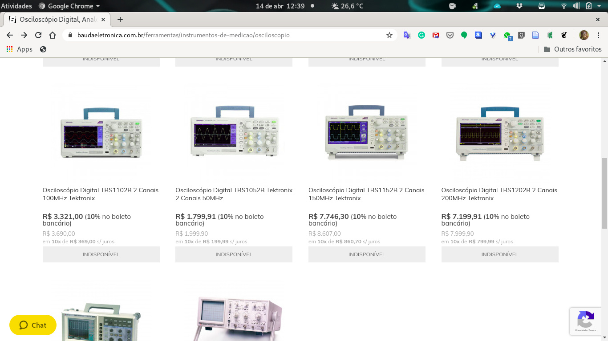
Osciloscópio Digital TBS1102B 2 Canais 100MHz Tektronix Osciloscópio Digital Tektronix de 2 Canais 100 MHz, excelente custo benefício, leve e compacto, display colorido com 7 polegadas, 2 canais, banda de 100MHz, Taxa de amostragem 2GS/s simultâneo em todos os canais.
Osciloscópio digital de 200 MHz, 2 canais, taxa de amostragem mínima 2GS/s por canal simultaneamente para medidas em tempo real, 02 digitalizadores independentes. Tela de cristal líquido WVGA colorida de 7 polegadas. Dois canais de frequencímetro de 6 dígitos.
Exemplos de Aliasing
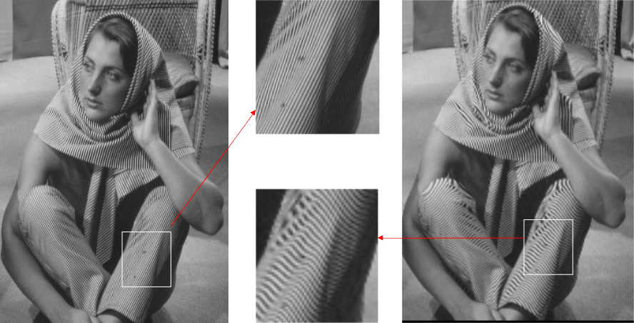
Sem Aliasing (figura da esquerda)
Com Aliasing (figura da direita)
Diagrama em Blocos
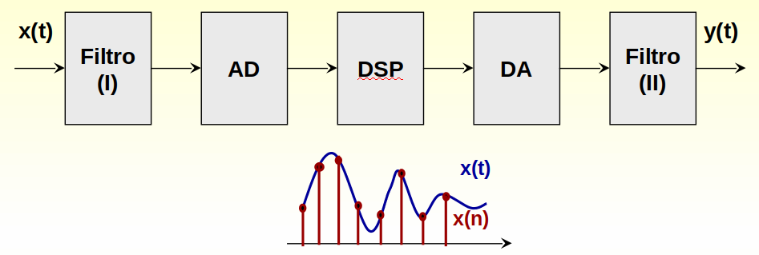
Interpretação da reconstrução no tempo
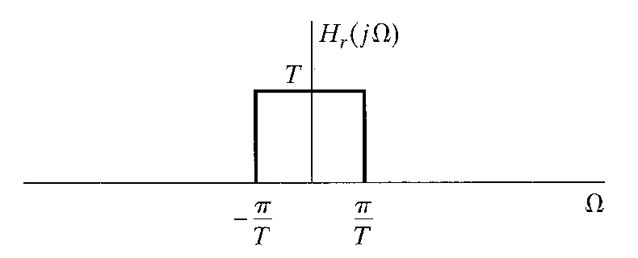
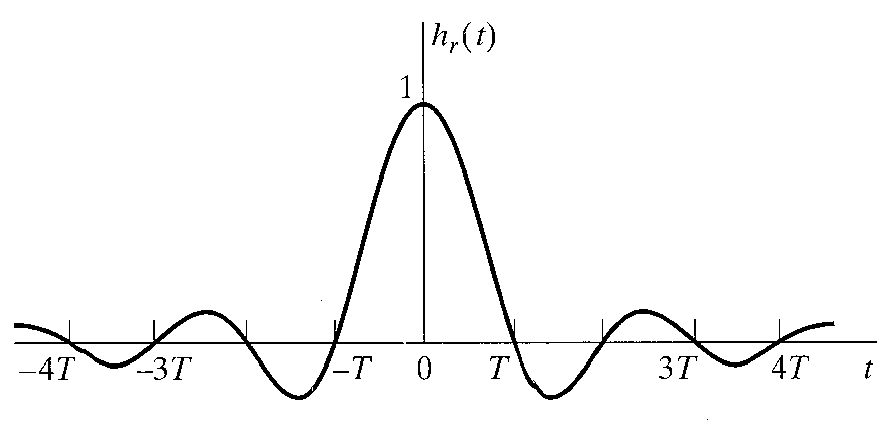
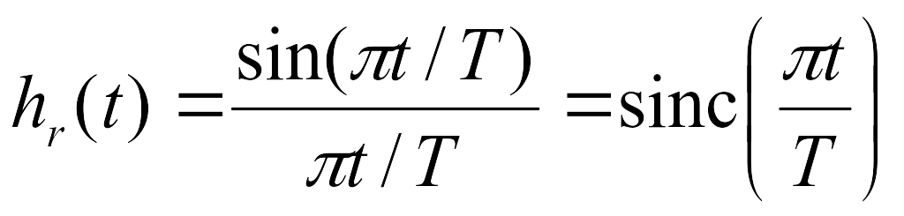
Exemplo de amostragem de uma senoide não respeitando Nyquist
Seja \(x(t) = cos(500\pi t)\).
Determine a sequência \(x[n]\) para uma frequência de amostragem igual a 1000 Hz;
Determine a sequência \(x[n]\) para uma frequência de amostragem igual a 200 Hz; (resp: \(cos(0.5 \pi n)\));
A partir de \(x[n]\) do item anterior determine o novo sinal no domínio do tempo contínuo \(x'(t)\)
Solução
De forma geral tem-se, \(x[n] = x(nT)\). Do exemplo proposto, tem-se \(500\pi = 2\pi f_o\), \(f_o = 250\) Hz.
\(T=\frac{1}{1000}\) então \(x[n] = \cos(500\pi n \frac{1}{1000}) = \cos(\frac{n\pi}{2}) \). Como \(F_a > 2f_o\) essa amostragem atende o critério de Nyquist;
\(T=\frac{1}{200}\). Então \(x[n] = \cos(500\pi n \frac{1}{200}) = \cos(\frac{5n\pi}{2}) \). Neste caso não atende o critério de Nyquist;
Quem é \(x'(t)\) tal que \(x[n] = \cos(\frac{5n\pi}{2}) \to x'(t)\)
recordando \(x_a(t) = x(t)s(t)\) então \(X_a(\Omega) = X(\Omega)*S(\Omega)\) onde:
\(s(t) = \sum_{n=-\infty}^{\infty} \delta(t - nT)\) então \(S(\Omega) = TF\{s(t)\} = \frac{1}{2\pi}\sum_{k=-\infty}^{\infty} \Phi(\Omega -k\Omega_a)\)
Observa-se que \(S(\Omega)\) é um trem de impulsos em frequência e \(X_a(\Omega) = X(\Omega)*S(\Omega)\)
\(X_a(\Omega) = X(\Omega)*\frac{1}{2\pi}\sum_{k=-\infty}^{\infty} \Phi(\Omega -k\Omega_a)\)
\(X_a(\Omega) = \frac{1}{2\pi}\sum_{k=-\infty}^{\infty} X(\Omega)*\Phi(\Omega -k\Omega_a)\)
\(X_a(\Omega) = \frac{1}{2\pi}\sum_{k=-\infty}^{\infty} X(\Omega -k\Omega_a)\)
Com a propriedade (\(x(t-t_0) = x(t)*\delta(t-t_0)\), na frequência) tem-se que \(X_a(\Omega)\) será a repetição periódica do espectro de \(X(\Omega)\) espaçados de \(\Omega_a\). Para que não tenha aliasing tem-se \(X(\Omega)=0, \Omega > \Omega_M\) e \(\Omega_a > 2\Omega_M\).
No contexo do problema, o sinal \(x(t) = \cos(\Omega_{250} t)\) onde \(\Omega_{250} = 2\pi250\) rad/s e \(X(\Omega) = -\delta(\Omega+\Omega_{250}) + \delta(\Omega - \Omega_{250})\).
Para reconstruir esse sinal, o espectro, \(X(\Omega)\) será deslocado de \(200\) Hz (frequência de amostragem). O resultado dessa operação será filtrado (idealmente) para retirar a repetição do espectro. O filtro (filtro reconstrutor) adotado é, por convenção, metade da frequência de amostragem \(\Omega_{100} = 2\pi 100\).
para \(k = 0\), \(X_a(\Omega) = -\delta(\Omega+\Omega_{250}) + \delta(\Omega - \Omega_{250})\) e como os impulsos estão acima dos \(100\) Hz serão bloqueados;
para \(k = 1\), \(X_a(\Omega) = -\delta(\Omega+\Omega_{250-200}) + \delta(\Omega - \Omega_{250+200})\) e, neste caso o impulso em 450 Hz será retirado mas o impulso em -50 Hz passa pelo filtro;
para \(k = -1\), \(X_a(\Omega) = -\delta(\Omega+\Omega_{250+200}) + \delta(\Omega - \Omega_{250-200})\) e, neste caso o impulso em -450 Hz será retirado mas o impulso em 50 Hz passa pelo filtro;
para \(k = 2\), \(X_a(\Omega) = -\delta(\Omega+\Omega_{250+400}) + \delta(\Omega - \Omega_{250-400})\) e, neste caso ambos os impulsos serão serão bloquados;
Para qualquer valor \(|k| > 2\) os impulsos serão bloqueados.
E, neste caso, \(X_a(t)\) será composto apenas pelos impulsos \(-\delta(\Omega + \Omega_{50})\) e \(\delta(\Omega - \Omega_{50})\)
\(X_a(\Omega) = -\delta(\Omega + \Omega_{50}) + \delta(\Omega - \Omega_{50})\), logo \(x(t) = \cos(50\pi 2t)\)